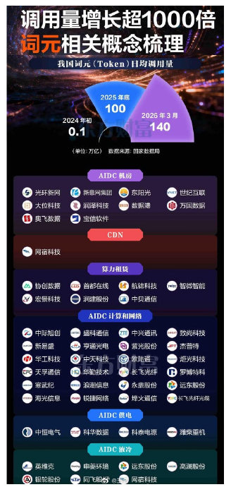
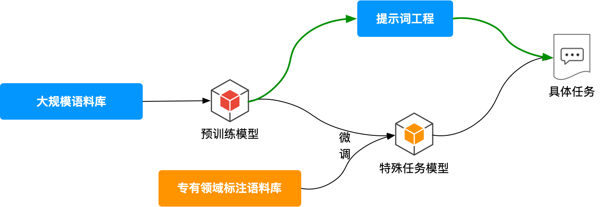
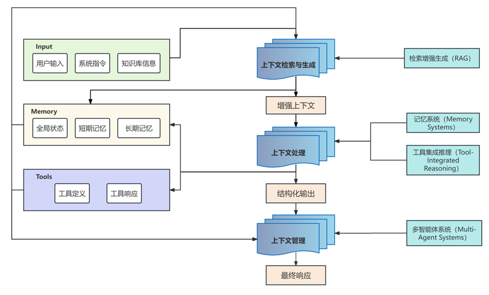
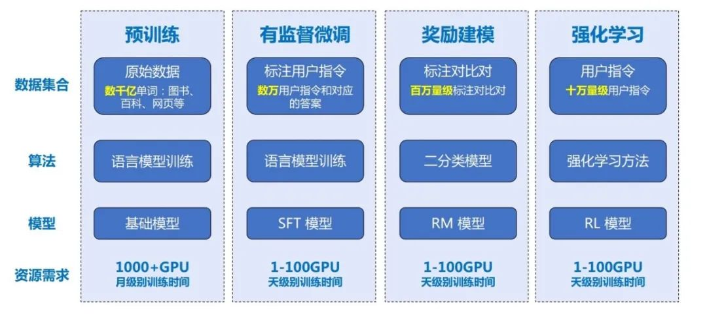
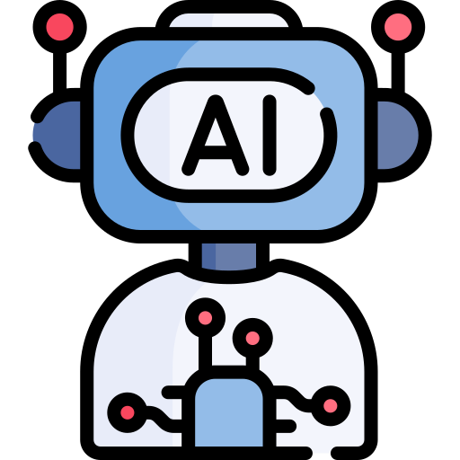

AI世界全景架构
从底层的电力基建到顶层的智能应用，深入解析AI生态系统的七大核心层级，揭示技术背后的逻辑链条与数据流向。
基础设施层：电力基建与数据中心
硬件层：算力芯片
NVIDIA
市场份额 80%+
- H100: 800亿晶体管
- B200: 2080亿晶体管
- 核心: CUDA生态护城河
AMD Instinct
性能追赶者
- MI325X: 256GB HBM3E
- MI300X: 192GB HBM3
- 技术: CDNA 3 架构
Google TPU
自研加速器
- TPU v7p: "Ironwood"
- 内存: 192GB HBM
- 特性: 训练/推理通用
国产突破
自主可控
- 昇腾910C: 华为达芬奇3.0
- 海光DCU: 兼容生态
- 壁仞/寒武纪: 多元算力
核心模型层：Transformer与大模型
三大架构变体
双向注意力
适合文本理解、分类任务 (BERT, RoBERTa)
单向掩码注意力
适合文本生成任务 (GPT-4o, Llama 3, DeepSeek V3)
编码-解码
适合序列到序列任务，如翻译 (T5, BART)
训练流程三阶段
预训练 (Pre-training)
海量未标注语料自监督学习，获得通用语言能力。消耗数万块GPU，成本极高。
指令微调 (SFT)
高质量指令数据训练，学会执行特定任务。是模型"听懂话"的关键。
强化学习 (RLHF/DPO)
通过人类偏好或模型自我博弈优化，对齐人类价值观，提升逻辑思维。
交互机制层：Token与提示词工程
Token & Context Window
Token是模型处理数据的基本单位。上下文窗口是模型的"工作台面"，限制了输入输出的总量。
提示词工程
指令角色、精确表达、要求输出格式
让模型"一步步思考"，显著提升复杂推理能力
提供示例帮助模型理解期望的输出模式
应用层：AI Agent与智能体技能
AI Agent是具备自主性、感知力、行动力、学习力的智能实体，能够主动规划任务、调用工具以完成目标。
规划能力
CoT, ReAct模式
任务分解
记忆能力
工作/短期/长期记忆
向量数据库
工具使用
API/数据库调用
代码执行
学习力
经验积累
自我优化
Agent Skills Mechanism
Agent Skills是一种模块化能力封装机制。通过"发现-激活-执行"三阶段加载，允许LLM动态加载特定领域的指令、脚本和资源，实现专业任务的标准化执行。
逻辑链条与数据流
Token化 + 提示词工程] B --> C[模型层
Transformer推理 + 大模型] C --> D[硬件层
GPU/TPU算力计算] D --> E[基建层
电力支持] E --> F[应用层
Agent规划 + Skills执行] F --> G[输出结果] style A fill:#1e293b,stroke:#475569,color:#f8fafc style B fill:#1e3a8a,stroke:#3b82f6,color:#bfdbfe style C fill:#312e81,stroke:#6366f1,color:#c7d2fe style D fill:#831843,stroke:#ec4899,color:#fbcfe8 style E fill:#78350f,stroke:#f59e0b,color:#fde68a style F fill:#064e3b,stroke:#10b981,color:#a7f3d0 style G fill:#0f172a,stroke:#334155,color:#f8fafc
| 层级 | 关键指标 | 发展趋势 |
|---|---|---|
| 电力基建 | 415 TWh (2024) → 945 TWh (2030) | 绿色化、能效优化 |
| 算力芯片 | FP8算力: B200 达 20 PFLOPS | Chiplet、存算一体 |
| 大模型 | 混合专家(MoE)、万亿参数 | 多模态、端侧部署 |
| 交互应用 | 上下文: 200万+ tokens | 自主Agent、实时多模态交互 |
未来发展方向
算力与模型
- Chiplet技术普及与存算一体
- 量子计算与AI融合探索
- 多模态能力深度整合
交互与应用
- 百万级Token超长上下文
- 多Agent协作与群体智能
- Agent Skills生态标准化
基础设施与挑战
- 绿色算力与算电协同发展
- 应对2025-2028年电力缺口
- AI促进新能源研发
关键技术节点解析
深入解析Token词元、提示词工程、大模型训练等核心概念
Token词元：AI时代的最小数据单位
Token（词元）是AI大模型处理信息的基本单位，是连接人类语言与机器计算的桥梁。我们可以把它理解为"AI时代的最小数据单位"。[17]
Token的具体形式
- 完整单词：如英文"hello"、中文"你好"
- 单词的一部分：如英文"un-""happiness"
- 汉字与标点：一个汉字可能是一个Token，标点符号也是

我国Token日均调用量呈爆发式增长
提示词工程：与AI对话的艺术与科学
提示词工程是一门系统性地研究、设计和优化提示词，以从大型语言模型中可靠地获得高质量输出的学科。有效的提示词通常包含任务、上下文、指令和输入数据。
任务 (Task)
明确告诉AI我们希望它做什么，如总结、翻译、编写。
上下文 (Context)
提供任务相关的背景信息，如用户背景、使用场景。
指令 (Instruction)
对输出形式的具体要求，如字数限制、格式要求。
输入 (Input)
需要处理的具体内容，如待总结的文章、待分析的数据。
模糊提示词
"写点关于太阳的东西"
可能得到从小学科普到天体物理学的任何内容，完全不可控。
优质提示词
"用通俗易懂的语言，为小学生解释太阳为什么东升西落，字数在200字以内"
得到聚焦、准确且完全符合受众需求的回答。

上下文工程：AI的"记忆管理"系统
上下文工程关注的是"整个会话"的战略管理，而不仅仅是单次对话的优化。如果将AI Agent比作一个新型操作系统，上下文工程就如同操作系统管理CPU的RAM一样，去管理LLM的上下文窗口。
提示词工程 vs 上下文工程
| 关注点 | 单次指令的措辞 | 完整信息环境的设计 |
| 范围 | 提示词文本 | 指令、数据、工具、记忆 |
| 时间维度 | 静态、一次性 | 动态、跨会话 |
上下文工程的四大类系统
检索增强生成 (RAG)
通过检索外部知识库增强回答能力
记忆系统
构建短期和长期记忆，支持个性化
工具集成推理
调用外部工具（搜索、计算器）完成任务
多智能体系统
多个AI智能体协作完成复杂任务

大模型训练：AI的"教育过程"
大模型训练是基于海量数据和大规模算力，训练参数量巨大的深度学习模型的过程。Transformer架构的提出彻底改变了这一领域。
预训练 (Pre-training)
让模型阅读互联网海量数据，学习语言规律。
- 数万亿 Token 数据
- 目标：预测下一个Token
- 消耗大量算力(数月)
监督微调 (SFT)
提供高质量问答示例，让模型学会对话格式。
- 高质量人工构建对话
- 目标：学会听懂指令
- 依赖领域专家标注
人类反馈强化学习 (RLHF)
通过奖励机制，让模型输出更符合人类偏好。
- 奖励模型 + PPO算法
- 目标：对齐价值观
- 提高安全性和有用性
大模型的涌现能力
当模型参数量和训练数据达到一定规模后，会突然展现出训练时未专门设计的复杂能力，这是从量变到质变的飞跃。

技术节点的协同工作
四大技术节点相互关联、协同工作，构建出强大的AI应用。
智能代码助手
理解复杂逻辑、提供调试建议、生成高质量代码、保持多轮对话一致性、适应不同编程风格。
智能客服系统
理解复杂需求、提供准确产品信息、处理订单查询与售后、保持服务态度一致性、持续优化质量。
AI应用生态分类体系
构建网状分类结构，明确智能体构建平台、代码助手、通用大模型等主要类别，解析生态层级与关联关系
五大核心类别
生态层级架构
应用层 (Application Layer)
直接面向用户/场景Claude Code, Codex, CodeBuddy, Cherry Studio
NotebookLM, Metaso秘塔AI搜索
WorkBuddy, OpenClaw, Hermes Agent, Antigravity, 悟空
开发层 (Development Layer)
快速构建与编排基于通用大模型提供快速开发能力，连接模型与应用
基础层 (Foundation Layer)
核心推理与生成能力为上层应用提供核心算力与智能引擎
热门AI产品矩阵
Work Buddy、Cherry Studio、DeepSeek、Dify、Coze等产品逐一梳理，构建完整的AI应用生态认知
产品生态分类体系
基础大模型层
AI产业的技术底座，提供通用的语言理解、推理和生成能力。
AI编程助手层
专注于提升开发效率和代码质量，支持多模型与企业级协作。
Agent构建平台层
连接大模型与应用场景，帮助快速构建、部署和管理AI智能体。
产品生态价值链
基础大模型
智力基础
编程助手
效率提升
Agent平台
快速构建
Agent框架
可控执行
应用工具
场景落地
核心产品深度解析

CodeBuddy
编程助手企业级工程智能体，多形态全栈能力，研发提效16%+[105]。
- 支持IDE插件/CLI/云端服务四种形态
- 国产/国际版模型智能路由切换
- Rules系统强制编码规范
Dify
Agent平台生产级Agentic工作流开发平台，融合后端即服务和LLMOps理念[542]。
- 可视化拖拽，模块化设计
- RAG Pipeline与智能检索
- 原生集成MCP协议
Coze/扣子
零代码平台30秒无代码生成AI Bot，提供丰富的插件生态和多渠道发布[565]。
- 对话式自动生成机器人
- 60+种插件，支持知识库
- 发布至微信、抖音等平台
Cherry Studio
多模型管理多模型统一管理的全能AI助手平台，支持云端与本地混合[516]。
- 300+预配置助手，支持自定义
- 多模型同时对话对比
- 本地知识库系统，保障隐私
Hermes Agent
自我进化与你共同成长的智能体，具备闭环学习系统和四层记忆系统[526]。
- 技能自动创建，越用越强
- 四层记忆系统（会话/技能/建模）
- 六种终端后端部署能力
NotebookLM
研究工具AI增强型研究笔记本，多格式输出，基于用户资料的可靠问答[159]。
- 支持PDF、URL、YouTube视频
- 生成音频概览、思维导图
- 慷慨免费额度，深度链接原文
OpenClaw
Gateway框架多渠道个人助理操作系统，自托管Gateway，40+消息渠道统一管理[591]。
- 六阶段流水线架构
- 三级操作权限（只读/读写/危险）
- 54+内置技能生态
场景化选型建议
| 应用场景 | 首选推荐 | 推荐理由 |
|---|---|---|
| 企业级AI应用开发 | Dify | 生产级工作流，细粒度访问控制，无缝集成[542] |
| 快速原型验证/C端Bot | Coze | 30秒生成，零代码门槛，一键多渠道发布[565] |
| 多模型管理与对比 | Cherry Studio | 统一管理云端+本地模型，300+预配置助手[516] |
| 多渠道统一管理 | OpenClaw | 40+消息渠道，三级权限，本地优先安全可控[593] |
| 长期学习与自我进化 | Hermes | 闭环学习，技能自动创建，四层记忆系统[526] |
| 学术研究、文献整理 | NotebookLM | 多格式音视频输出，基于用户资料的可靠问答[159] |
| 企业级项目编码 | CodeBuddy | 企业级能力，Rules系统确保规范，团队协作提效[96] |
未来发展趋势洞察
技术融合趋势
- 模型与应用融合：从军备竞赛转向生态构建（如Dify、Coze）
- Agent化演进：从Chatbot向自我进化Agent演进（如Hermes）
- 端云融合：云端性能+本地隐私（如Cherry Studio混合模式）
商业模式演进
- 订阅制兴起：从按Token计费向订阅制转变（如CodeBuddy）
- Freemium模式：基础版免费引流，专业版付费解锁高级功能
- 企业级定制：提供私有化部署与深度定制服务（如Dify企业版）
生态建设趋势
- 开源生态：开源项目推动标准化与协作（如OpenClaw、Dify）
- 标准建立：跨框架统一标准（如Hermes的agentskills.io）
- 社区驱动：插件市场与社区贡献成为核心竞争力
客户沟通应用指南
掌握利用架构图与生态图进行价值传递的方法论，提升客户AI认知，建立专业信任
思维导图在沟通中的核心价值
利用架构图讲解技术逻辑
💡 常用类比与隐喻
利用生态图展示解决方案
构建生态图的四个步骤
提升客户AI认知的策略
常见沟通问题与解决方案
预期效果
通过科学的沟通方法，实现客户关系的全面升级
- 提高沟通效率
- 增强客户理解
- 减少误解
- 提高成单率
- 缩短销售周期
- 提升品牌形象
- 行业领导地位
- 客户忠诚度提升
- 可持续发展